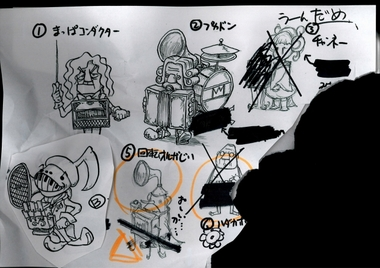
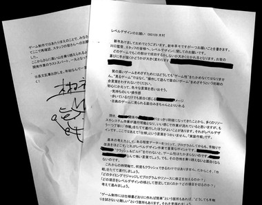

みなさん、ごきげんいかがでしょうか。
週末のキムＰです。
昨日、夜な夜なおうちに帰る途中、ミスタージョンと一緒になりました。
彼はとてもでかくて、マッチョです。
海外チーム所属の人なんですが、
ぱっとみ、NO MORE HEROESのデストロイマンみたいな人なんですよね。
ま、それはおいといて・・・。
その彼が言うんですよ、帰りぎわに・・。
「よい週末を！」って。
あ・・しまった。
週末・・だ・・・。
ブログ更新してないじゃないか！！！
でもそれに気がついたのは渋谷駅井の頭線の前・・・。
時すでに遅く・・ということで、やむなく更新は土曜の今・・となりました。
くそー。来週こそは金曜に更新するぞー。
さてさて、本題です。
今日は最後の一人の「ｘｘｘｘさん」のお話し。
実は、王様物語、ゲーム内に登場するキャラクターデザインはずいぶん前に
ぜーんぶ終わってるんです。ですが、やっぱりそこは、なんですかね・・・
途中でおもいついて、いれたくなるキャラって出るじゃないですか・・。
わがままいって、入れてもらう話にしたのはいいものの。
１２月の末からその１キャラを決めるために・・・
毎週、倉島さんと、ああだこうだとやりとりしてました。
だけどぜんぜん、決まらない。
なんつうか、私と倉島の適等フィーリングだと、普通１キャラに
１ヶ月かけないんすよ（笑）
それが、えらい時間かかっちゃった。
・・で、昨日ついに、８割りがた「ｘｘｘｘにしましょう」的なところが見えてきました。
今日はそのやりとりで使われた、ラフをお見せしましょう。
（また捨てられそうになったところをサルベージしました。）
これです↓ 
ちなみに、やぶかれた位置のものは、いきの絵なんですよね。
ひゃぁぁぁ～。
・・でで、でけました。とにかく、方向性みえた。
あ～、これで本当にキャラデザインは終わりそうだ。
よかった～。
※来週は福岡にいってきます。
開発の進捗具合はどうなっていることやら、はらはらどきどき。
ちょっくらのぞいてくる。
次回は緊急、福岡開発現場レポートなのだ。
お楽しみに！
こにゃにゃちわ。キムＰです。（ついに自ら言うことになったか・・・）
みなさん、お元気ですか？
ゲーム遊んでますか？ゲーム作ってますか？
今日はゲーム作りに大切な魔法の言葉を発表します。
それは 「クラッシュ＆ビルド」
無茶苦茶、僕的には怖い言葉。まかりまちがうと、クラッシュしたままプロジェクトが
終わる・・とかもありえる。
壊す時期や、再構築するマンパワーや期間をちゃんと想像しておかないと、
プロジェクト全体がクラッシュしてしまうかもしれないという、恐ろしい魔法の言葉。
でも、この言葉が超大事なんよね。
ものづくりってしてるときって、・・・・無意識に”壊すこと”を恐れてしまうわけですが
これを意識的にやらないと乗り越えられない壁があるのも事実なんですよね。
ゲームづくりって、そういう怖さを乗り越えないといかんのよね。
すんごく、勇気のいることなんです。
新年そうそう、このことを福岡のみなさんと
感覚的に共有したいなーとおもい・・・。
実は、手紙を書きました。
最初、Ｅ－メイルじゃなくて郵便局に頼もうかと思ってたのね。
そっちのほうが印象強いかなと思って。
でも、結局「早く伝わるほうがいいよなぁ。」と思ったのでネットで送った。
・・で、今日掃除してて、
シュレッダーにかける前に、ゴミ箱で封筒がみつかったので
その手紙を公開することしました。
※情報公開できないところは塗りつぶしてます。ご容赦ください。

うーん、ほんちゃんの露出はもうちょっい先です。
でも、なんか待ちくたびれてる人もすんげーいて、
お葉書に「いつでるんだー」とか「質問ですが・・」みたいなのが着ちゃうんですよね。
ほんと、ごめんなさい。もうちょっと待ってください。
あ・・・いいことおもいついた。
設定画とかボツネタとか、ほんちゃんの記事発表前に色々
ちらちらチラリズムで出しちゃおうかな。
来週出せるやつってなんだっけ・・・・。考えとかないと。
うーん、ここで勇敢に一言。
「乞うご期待 来週までお楽しみに！」
（笑）
あけましておめでとうございます。木村です。
さてさて実は、新年はじまってすぐに風邪をひいてしまいました。
正月元旦から、よく食べ、よく遊んで、酒をのみすぎて
寒空の中、夜の世田谷を友人とふらふらしていたのがまずかったな・・。
実は実は、そんな夜のこと、こんな夢を見たんです・・。
＊
いつも見る竹やぶの夢。
あまりに何度も夢の中で通った道だから、「また、ここにきた」という
気持ちもあったりして、かなり夢っぽくない。
竹やぶの中を歩いている僕の姿は
ハゲ頭の中学生。
とにかく、僕は見慣れた夢の中でさまよってました。
高校時代や中学時代の放課後にワープ。
３．５インチディスクドライブを壊されて、なくなく友人と作ったゲームの発表を
やめたりとか。
畑のまんなかになぜかたっていたアップルショップのおじさんにアップルⅡで
動くプログラムを教えてもらったりとか。
ロードランナーを作った作者の新聞記事をみて「へ～、これつくるだけで、
豪邸と車３台ゲットか～」とあこがれてみたりとか。
少し離れた駅の裏にあったソフト屋さんでかりた、
ＦＭ７用のゲームソフトをダブルカセットでダビングしたりとか。
白紙のノートに色鉛筆でゼビウスの絵をかいたり、古いナムコのゲームを
まねっこした嘘ゲーム画面をかいてみたりとか。
剣道の試合の後にパソコン屋で１時間も２時間もただでいじって遊んでたら、
店員におこられて、竹刀でどつかれたりとか。
やたらと、昔の出来事が混ざった夢、なつかしいような、痛いような。
せつないような、それでいて初心にもどれるような。
どれもこれも、ちょっとうれしくて、ちょっと寒々しいそんな夢。
そんな寒々しい風景をみたあと、夢から目覚めると、
あら不思議、しっかり風邪をひいていました。
そして、元旦から７日まで熱も咳も順調に悪化（笑）
最後の日曜は布団のなかでうなされながら、倒れておりました。
やっとこさ本日、風邪がなおってきたところです。
＊＊＊＊＊＊＊＊＊
なにが言いたいのかって？
いえいえ、とくになにもありません。
あえて言うなら、自分が初心にかえって「がんばるど！」と
宣言したかった・・というところでしょうかね（笑）
とにもかくにも、お客さんの皆さん。九州スタッフの皆さん、福岡スタッフの皆さん
このゲームを期待して、ブログをちょこちょこ覗いてくれている皆さん
今年は王様物語 発売の年です。
皆様、今年もよろしくお願いいたしま～す。
～んがくっく。


 クリエイターズBLOG トップ
クリエイターズBLOG トップ